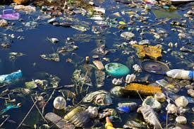
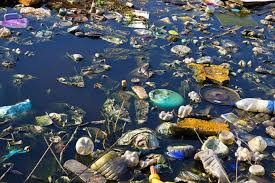

Ensuring a sustainable water future requires a comprehensive approach to water management. Beyond simply cutting back on water use, we need to actively educate the public about the increasing scarcity of freshwater resources and equip them with practical conservation methods. Financial incentives, like rebates and subsidies, can encourage people to adopt water-saving technologies in homes and businesses. Crucially, implementing strategies like capturing rainwater, reusing water in industrial processes, and strengthening wastewater treatment systems will be vital in minimizing pollution and making the most of our existing water resources. By working together to raise awareness, provide support, and implement concrete solutions, we can reshape our relationship with water and safeguard its quality and abundance for future generations.
 

Maintaining sustainability and improving the standard of living for individuals who live close to our bodies of water depend on their protection and preservation. We can stop more pollution, protect aquatic habitats, and advance the health and welfare of nearby populations by putting strict regulations and efficient waste management plans into place. Clean water is an essential resource that needs constant care and protection since it not only sustains biodiversity but also improves the general environment and public health.
How to keep water clean. Cleaning waters. A simple guide on how to preserve water.
Our team provides EFFICIENT and EFFECTIVE solutions on managing waste in bodies of water. We are committed to safeguarding the health of our planet's precious water resources, our team delivers efficient and effective solutions for managing waste in bodies of water, ensuring cleaner and more sustainable aquatic ecosystems for generations to come.
If you have any questions, feel free to reach out at
facebook/messenger:facebook link.
facebook/messenger:facebook link.
Phone Number:09517914358
If you want to extend help you can send it via gcash just scan the QR code below.